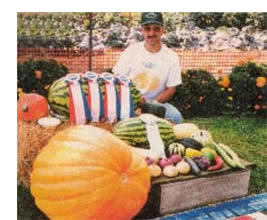

There'$ Gold In The Garden
Selling what you sow: growing and marketing produce.
by Mort Mather
February/March 1999
Make a buck and do what you love.
Is there a better life?
The demand for organic food keeps growing. That it exceeds the supply is certainly good news for anyone interested in farming organically. It is interesting that people who ask me about starting a business of growing vegetables for market are most interested in marketing. I tell them marketing is the easiest part of the process. Planning, preparing the soil, planting, controlling weeds, and harvesting are the tricky parts. Grow it and they will buy.
That is an overstatement, of course. and someone who takes it literally could get themselves in a lot of trouble pretty fast. I'm reminded of the person who called me several years ago to ask where one could sell an acre of zucchini that was ready to harvest.
Where do you sell a perishable crop that doesn't have a good frozen or canned market? You can't take it to a processing plant. An unconscionable broker might he interested-one who didn't have contracts with other farmers for all that could be moved and didn't care about depressing the price for other farmers he or she dealt with. If you are gong to raise a perishable crop, you better have a pretty good idea who is going to buy it before you plant the seeds. You also ought to double-check the market as you get closer to harvest. Let your buyers know that the crop will he ready soon, which gives them the opportunity, if they are like the unscrupulous broker, to give you a little warning that things may have changed since you first talked.
Hard Lessons and First Steps
Establish your market before you buy the seed. You may find that there is no market for what you think you want to grow.
My neighbor, Bob, has been delivering manure and animal bedding to the side of my garden this past year (lucky me!). I wanted to repay him in kind. Well, not exactly in kind, but rather with the results of his gift to me. In discussion with him, however, I found that his family doesn't eat much of what I grow. They have a small garden of their own, which gives them the few vegetables they eat.
What if I decide to market through a farm stand, only to learn the hard way that none of the people who drive by my door are into vegetables or that they themselves all have vegetable gardens? A good marketing plan must begin with some market research.
Knowing what people want is not enough (Bob likes tomatoes). It is also necessary to know...
1. Where do they get their produce now?
2. Are they satisfied with what they are getting now?
3. Would they buy from you if that were an option?
4. Do you feel comfortable competing
against the current supplier?
When you know what you are going to sell and to whom, the real challenge begins planning. The right combination of seed supply, feet of row, and the right planting moment will hugely affect the bushels or pounds or ears or heads you think you car. sell. This is an article on marketing, but planning is a big part of success in marketing perishable crops. If you are planning to sell as many tomatoes as possible to a processor, you may want to plant just one variety with a short harvest season. If you are supplying a restaurant or your own roadside stand, you will want to have tomatoes both early and continuously until the season ends.
The third major element in marketing, after what and to whom, is presentation.
Size, color, shape, cleanliness, and even (wonder of wonders) taste are part of presentation. Presentation will change a little with different marketing strategies, but the look and feel of the product and its packaging, display, and surroundings are extremely important. There is still the impression among some that organic produce doesn't have to look as good as produce grown using pesticides. If you are planning to sell your produce, you should banish that thought. There is no reason for organic produce to be inferior in any way to chemically grown. Wormy is not a seal proving pesticides were not used. Rather, it is an indication of poor agricultural practices.
Thinking Big: Starting Small
Before getting into further specifics, I should say that I like to start small. I would probably never be interested in having a big operation, so those of you who have visions of big tractors and tractor-trailer loads of produce being shipped to far-off places should probably stop reading here. I like my land and I like to be close to it. I like people and I greatly enjoy having someone tell me that my produce is wonderful.
I am going to give you some thoughts on seven different ways to market farm produce. At a farm stand or a pick-your-own operation, your customers come to you. Community supported agriculture (CSA) is both a marketing plan and a financing possibility and can involve people coming to your farm, you delivering to a central location, or you delivering to people's homes. Another direct-to-customer marketing possibility is selling to restaurants and/or food stores. Farmers' markets are similar to food stores, since in both instances you take your produce to a location where customers can find it easily.
Let the customers come Unto You
A farm stand on the road in front of your house is the simplest application of this principle. You can start really small with this approach by putting garden surplus on a table at the side of the road, a sign saying, "Cukes 10e," and a can with a slot in the top. Since you are not expecting to make a killing with this approach, we might better call it market research. You will find out if anyone passing your house will stop to buy cucumbers. You can improve the research by printing, a list of vegetables. Ask those who stop to check off the vegetables they would like to buy from you if you had a bigger farm stand.
Planning production with this very small start is easy, too. Most gardeners have some surplus at some part of the season. We can easily plan to have more surplus for this test market, just by planting a little more lettuce or peas or beans than we know we will need for ourselves.
Cucumbers will hold up fairly well in the open, but lettuce lying around on a table in the sun isn't going to sell well. Improve the presentation with an umbrella over the table for shade. A colorful umbrella will also attract attention and is more likely to bring in customers than the simple table. Once they stop, you want them to see crisp, clean lettuce--perhaps a couple of heads of leaf lettuce standing in water in a bread pan. If you are planning to build a business, you want people to be impressed by the quality they see.
In the beginning, price is not terribly important, but it should probably be close to the supermarket price or perhaps a little lower. You are asking people to stop, get out of their car, and do something new. In big-store terms, this approach is called a "low-price leader" to get people in the store. They assume once someone is in the store, he or she will purchase more items. In this case, you want people to break the barrier of resistance to change. If they stop once, they are much more likely to stop again. If they like the results of the stop, they are even more likely to stop again, and they may even start advertising for you. Many off-the-beaten-path farm stand businesses have been built from these small beginnings.
This approach can take many forms. I know of one very shy person who farms a couple of acres on a busy road and never talks to his customers. He has used the honor system for a couple of dozen years. The stand is a cart with a roof. I have never seen him near the cart, but it always has an array of fresh vegetables. Another farm stand that I knew (it had its start in a local garage) is now a major store selling wine, cheese, breads, fancy desserts ... you name it. It even maintains a mailing list and sends out newsletters.
Pick-your-own is another home marketing approach. This is usually done with fruit like apples and berries, but peas and green beans are also reasonable crops for pick-your-own. It is appealing to people who want to get out in the country and do something interesting, often as a family outing. Lower prices are also appealing, especially for those wanting to preserve, can, or freeze large quantities. Even though harvesting is the great est expense for these crops, don't lower your prices too much. Pick-your-own is attrac tive for reasons other than price. It appeals particularly to consumers who like the idea of spending time in a chemical-free environment. Planning takes on a new dimension in pick-your-own. Rows need to be farther apart, since you will have more people clumping around. You also need to plan for traffic 'to and from the harvest areas. Pick-your-own can involve planning for a very long season, opening with strawberries in the spring and closing with apples and pumpkins in the fall. It can go even far ther with cut-your-own Christmas trees.
I can't think of any cost-effective market research for pick-your-own. Jim and Julie Morrison wanted to grow berries, so they went to work and planted an acre. They left plenty of room between the rows and planted it to grass that could be kept mowed and looking neat. The first year the berries produced, the Morrisons found themselves doing a lot of picking. Since berries are a perishable crop, the couple had to do something to preserve them. Easy. They made preserves. The business built over the years, and now families come out for a breakfast of blue berry pancakes before hitting the blue berry bushes to pick their own. They might buy some of the preserves to take home, just in case they eat all they pick before making preserves of their own.
Another farm in my area specializes in pick-your-own strawberries. It has taken several years to build the cus tomers for seven acres of strawberries. The farmer didn't start with seven acres, though; instead, he planted more each year, estimating how many more pickers were likely, based on the past year's success.
Some will tell you that the three most important considerations in business success are location, location, location. If your farm is 20 miles from the nearest concentration of people and no one ever drives by your door, your location is likely to be a problem. But you don't have to he on a well-traveled road to have success in getting people to come to you. People will drive several miles out of their way to a farm stand they have come to like. They will tell their friends, too. They will drive even farther to a pick-your-own operation. How far? That depends on the area. We have driven ten miles to pick strawberries and farther to buy apples from an orchard that also has a great fall view A farm stand four miles off the beaten path has become a year-round grocery store just by getting a loyal following. The food they truck in is frequently a return load,following on the heels of a delivery of their own produce to food brokers in the city.
Community supported agriculture (CSA) is a partnership between consumers and farmers formed before the growing season begins. Consumers pay the farmer in advance for shares of an expected crop. This gives the farmer money to bury seeds and cover other planting season expenses at a time when cash flow is at its lowest. The investors will be repaid in food as the crops come in.
This idea was initiated 30 years ago in Japan, where a group of women, concerned about the increase in food imports and the corresponding decrease in the farming population, initiated a direct growing and purchasing relationship between their group and local farms. The idea came to this country in the mid-1980s and has been growing steadily. The University of Massachusetts Cooperative Extension reported there were nearly 600 CSA's in the United States and Canada as of the summer of 1996.
This approach can't be beaten for starting small. If you have a garden that supplies most of your family's vegetable needs for the year and you want to expand, go to your closest neighbors without gardens and offer to plant and tend a garden for them. Tell theirs you will double the size of your garden, harvest some things for them, and let them know vi lien it is time to harvest others; in exchange they'll agree to give you an amount of money now. You can determine the amount of mon by figuring the time you spend gardening (not counting the time you spend dubbing around and enjoying it), cost of seeds, soil amendments, etc. Or you can keep track of the food you take from your garden and what it would cost if you bought it. Of course, this calculation would be done the year before you start your mini-CSA.
Market research with this approach is absolute. You know you have customers before you plant because they have paid you in advance. Planning should be easy, as well, if you have been doing a good job of supplying
your family with lettuce from. say, May through October. If not-but you know why having a responsibility to someone else may help you get those succession plantings going on time. The presentation is also easier with this approach, because your customers are somewhat involved from the beginning. They are likely to be snore tolerant of soil that splashed up on the spinach since they are aware of the rain that caused it and can make that direct association. Still, you should wash the spinach before giving it to your neighbor. There's no excuse for negligence.
Ifyou think you need more signs, you probably have too many. Signs can be important, but the general appearance of the stand will do more for you than any amount or quality of sign. Consider a kid sitting at a table along the side of the road with a pitcher on the table may be a sign that says-Lemonade" tacked to the front of the Table and it may give the price, but cars approaching can't even see the sign because it is parallel to the road. It doesn't matter, because the picture speaks for itself, People may stop because they are thirsty or because they think kids selling lemonade are cute, They won't stop because the price is right or because the sign attracted them.
A farm stand can do much the same thing. It can be funky. It can even have a certain dishabille surrounding it, as long as the chaos is due to recent activity and not neglect. The look of the place will do more to bring in customers than any sign. A single "Farm Stand" or "Smith Family Farm" or "Fresh Vegetables" are
possible permanent signs for the stand. Make sure your sign or signs are visible, not by someone standing in front of the stand, but by people driving by in car.
Unlike the lemonade stand you do need to let people know a little more about what you are selling. A blackboard or some other sign that can be changed easily and that conveys the message that it presents "Today's News" works well. Another possibility is a sign from which other signs hang, providing a listing of what is available. The value of this sign is that it gives the impression that there is a lot of produce available.
Remember, it is not so much what the sign says as the impression it makes. Some examples:
"Cucumbers 6/$'I" says, "Good deals here."
"CORN!!!" says, "This is what you have been waiting for."
"OUR OWN!" says, "You won't get any better anywhere else."
A list of items says, "You'll find what you are looking for here.
Type Illustration : Rodney A. Okyne
 The demand for organic Tim and Jill Stark, owners of Eckerton Hill farms in Hamburg, PA, have been selling their exotically colored and flavored peppers since 1995. The business made a $25,000 profit last year. ""We could have made our money just selling to restaurants,"" says Tim, ""but getting a price worth our time was too tough. If you have a great product and you know it, you should be bold and charge what you think you're worth...and don't be afraid to start small."" |
Photo: MOLLY MILLER Farmers' market in Norwich, Connecticut. |
Photo: MOLLY MILLER A roadside market we passed in rural Pennsylvania. |
|
Photo: Hanson Carroll/Peter Arnold Mother's Photo Club Winners! Kelly Blackie in her garden. Our thanks to Judy Petersen for the Photo |
Photo:LARRY LEFEVER/ GRANT HEILMAN Homegrown produce and homespun marketing. |
Photo:LARRY LEFEVER/ GRANT HEILMAN Mother's Club Photo: Deanna Rae Warner, age 4, in her great-grandmother Lana Rae Wilson's garden in Little Marsh, Pennsylvania. |
|
Photo: Robert Baraclay/Grant Heilman Mother's Club Photo: Bud Bowers of Bluffington, Ohio, and his incredible harvest. |
Mother's Photo Club : Karen Osborn of Hatterville, Arkansas, with Arkansas Traveler Tomatoes |
 Mother's Photo Club : Karen Osborn of Hatterville, Arkansas, with Arkansas Green Arrow peas. |
|
 |
|
|